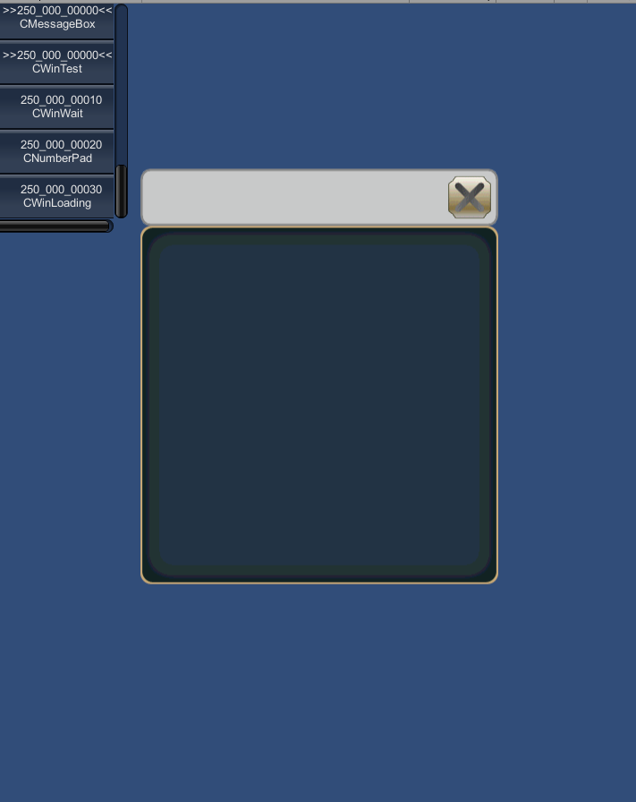

WINDOW¶
WINDOW(ウィンドウID) {
プロパティ1;
プロパティ2;
:
:
プロパティn;
};
ウィンドウIDは、 マルチID で指定してください。
wraファイル名が TestWindow.wra ならば、TestWindowBase.csというファイルを自動生成します。
TestWindowBase.cs
使うときは、TestWindow.csを作り、TestWindowBaseを継承してください。
TestWindowBase.csが出力されるパスは、スクリプト上で PATH を使って指定できます。
using UnityEngine;
using System;
public class TestWindow : TestWindowBase {
:
:
}
記述例¶
最少のウィンドウスクリプト¶
WINDOW(250_000_00000) {
STYLE = WINDOW_STYLE_ANCHOR_CENTER;
SIZE = 400,400;
};
このスクリプトで次のようなウィンドウが表示されます。
ウィンドウの原点位置は、フレームの左上です(タイトルバーの左上ではありません)。
次のように記述するとタイトルバーが見えなくなります。
WINDOW(250_000_00000) {
STYLE = WINDOW_STYLE_ANCHOR_TOP;
SIZE = 400,400;
};
次のように記述するとタイトルバーが表れます。
WINDOW(250_000_00000) {
STYLE = WINDOW_STYLE_ANCHOR_TOP;
POSITION = 0,-64;
SIZE = 400,400;
};
クローズボタンのないウィンドウスクリプト¶
クローズボタンを削除するには次のようにスタイルを設定します。
WINDOW(250_000_00000) {
STYLE = WINDOW_STYLE_NOCLOSE|WINDOW_STYLE_ANCHOR_CENTER;
SIZE = 400,400;
};
タイトルバーを無くしたウィンドウスクリプト¶
タイトルバーを無くしたウィンドウスクリプト
WINDOW(250_000_00000) {
STYLE = WINDOW_STYLE_NOTITLEBAR|WINDOW_STYLE_ANCHOR_CENTER;
SIZE = 400,400;
};
全てのデフォルト表示を消したウィンドウスクリプト¶
全てのデフォルト表示を消したウィンドウスクリプト
WINDOW(250_000_00000) {
STYLE = WINDOW_STYLE_NOTITLEBAR|WINDOW_STYLE_NOFRAME|WINDOW_STYLE_ANCHOR_CENTER;
SIZE = 400,400;
};
全ての表示をコントロールを直接記述することで見た目のカスタマイズを最大限行えます。
ウィンドウのドラッグ移動について¶
STYLEにWINDOW_STYLE_DRAGを付けることによって、ドラッグによるウィンドウの移動を許可します。
タイトルバー、フレームやユーザー定義のコントロールをドラッグしたときに、ウィンドウを移動できます。 ただし、コントロールのスタイルにWIN_CTRL_STYLE_DRAGが付いているときは、ウィンドウの移動は発生しません。 以下の例を試してください。
WINDOW(250_000_00000) {
STYLE = WINDOW_STYLE_ANCHOR_CENTER|WINDOW_STYLE_DRAG|WINDOW_STYLE_NOFRAME;
POSITION = 0,0;
CLOSE_POSITION = 400,0;
SIZE = 400,400;
};
FRAME(Test) {
STYLE = WIN_CTRL_STYLE_DRAG;
SIZE = 400,400;
};
この例では、フレームをドラッグすると、フレームが複製され、その複製が移動します。 その反面、タイトルバーをドラッグするとウィンドウを移動することができます。
プロパティ¶
RESOURCE = マルチID¶
[KsTools]→[Export Window Resource]を行ったとき、アセットバンドルとして出力します。
同一の マルチID を指定していると、一つにまとめてアセットバンドル化してくれます。
RESOURCE = 000_014_00000;
この例では、000_014_00000.unity3dというアセットバンドルに出力します。
RESOURCE = パス¶
指定したパスに、アセットデータとして出力されます。
同一のパスを指定したときは、一つにまとめたアセットを出力してくれます。
RESOURCE = "Assets/KsSoft/Resources/windows";
この例では、Assets/KsSoft/Resources/windows.assetというアセットを出力します。
PATH = パス文字列¶
ウィンドウベースクラスを出力するパスを設定します。
カレントパスは、Unityプロジェクトの直下になります。
PATH = "../../../client/Assets/Script/TestWindow.cs";
TEX_ID = テクスチャID¶
デフォルトのテクスチャIDを設定します。
ここで設定した値は、各コントロールにおいて、テクスチャIDを省略したとき、適用されます。
TEX_ID = 010_000_00010;
TEX_ID 0～7 = テクスチャID¶
デフォルトのテクスチャIDを設定します。
コントロール内のテクスチャIDを省略したとき、この値が使われます。
また、フレーム、タイトルバーに使うテクスチャもここで指定できます。
CAPTION = キャプションID¶
ウィンドウのキャプション文字を設定します。
STYLE に対して WINDOW_STYLE_NOTITLEBAR が付いているときは、無視されます。
CAPTION = 020_000_00010;
POSITION = Ｘ,Ｙ¶
ウィンドウ表示位置を決定します。 表示位置は、STYLEで指定するアンカーによって変わります。
SIZE = 横サイズ,縦サイズ¶
ウィンドウサイズを指定します。
RELATIVE_SIZE(相対サイズ)を使うことによって、画面サイズから相対で指定できます。
SIZE = RELATIVE_SIZE(-100),RELATIVE_SIZE(-200);
この例では、スクリーンサイズが640x960であるならば、540x760のウィンドウを作ります。
SCREEN = 左上X,左上Y,横サイズ,縦サイズ¶
スクリーンの位置とサイズを指定します。
ウィンドウは、指定されたスクリーンに沿って大きさや位置が決定されます。
ウィンドウ座標やRELATIVE_SIZEは、全てスクリーンを基準に決定されます。
スクリーンを指定しないときは、全画面と同義になります。
SCREEN = 0,0,RELATIVE_SIZE(0),RELATIVE_SIZE(0); //全画面と同義
RELATIVE_SIZE(相対サイズ)を使うことによって、画面サイズから相対で指定できます。
STYLE = WINDOW_STYLE_ANCHOR_CENTER;
SCREEN = 0,-100,RELATIVE_SIZE(0),RELATIVE_SIZE(-150);
SIZE = 400,400;
この例では、下図のようにウィンドウを配置します。

PRIORITY = 表示プライオリティ¶
ウィンドウの表示プライオリティを設定します。 大きいほど、表示優先度が高くなり、手前に表示されます。 TEXTURE_ZOFFSET との違いに気を付けてください。
PRIORITY = 32;
TEXTURE_ZOFFSET = テクスチャID,Ｚオフセット¶
本ウィンドウシステムは、レンダリング最適化のために、同一テクスチャを使っているコントロールは全て単一のメッシュでレンダリングしようとします。
よって、各コントロール間のプライオリティは、あくまでも同一テクスチャを用いているコントロール間の表示優先度になります。
各テクスチャ間の表示優先度を変更するためには、TEXTURE_ZOFFSETを使います。これによって、特定のテクスチャを用いるメッシュの表示優先順位を変更できます。
小さいほど、表示優先度が高くなります。
TEXTURE_ZOFFSET = 014_000_00010,-1; //手前に表示するように変更
STYLE = スタイルフラグ0|スタイルフラグ1|..|スタイルフラグn¶
| 表示位置アンカーフラグ | 説明 |
|---|---|
| WINDOW_STYLE_ANCHOR_DEFAULT | アンカー位置を左上に設定
|
| WINDOW_STYLE_ANCHOR_LEFTTOP | アンカー位置を左上に設定 |
| WINDOW_STYLE_ANCHOR_LEFT | アンカー位置を左に設定 縦にはセンタリング |
| WINDOW_STYLE_ANCHOR_LEFTBOTTOM | アンカー位置を左に設定
|
| WINDOW_STYLE_ANCHOR_TOP | アンカー位置を上辺に設定 横方向にはセンタリング |
| WINDOW_STYLE_ANCHOR_CENTER | アンカー位置を画面中央にセンタリング |
| WINDOW_STYLE_ANCHOR_BOTTOM | アンカー位置を底辺に設定 横方向にはセンタリング |
| WINDOW_STYLE_ANCHOR_RIGHTTOP | アンカー位置を右上に設定 |
| WINDOW_STYLE_ANCHOR_RIGHT | アンカー位置を右に設定 縦にはセンタリング |
| WINDOW_STYLE_ANCHOR_RIGHTBOTTOM | アンカー位置を右に設定 縦には下辺を基準に配置 |
| ウィンドウ描画優先順位フラグ | 説明 |
|---|---|
| WINDOW_STYLE_TOP | ウィンドウの表示優先度を最大にする。 POPUP、TOPMOSTよりは優先度は低い。 TOP同士では、PRIORITYプロパティに設定されている優先度に従います。 |
| WINDOW_STYLE_POPUP | ウィンドウの表示優先度を最大にします。 TOPより優先され、TOPMOSTよりは優先度は低い。 POPUP同士では、PRIORITYプロパティに設定されている優先度に従う。 ウィンドウ以外をタッチしたとき、自動的にonCloseが呼ばれる。 |
| WINDOW_STYLE_TOPMOST | ウィンドウの表示優先度を最大にする。 TOP、POPUPよりは優先度が高い。 TOPMOST同士では、PRIORITYプロパティに設定されている優先度に従う。 |
| WINDOW_STYLE_NOECLIPSE | ウィンドウが開いたときに他のウィンドウを暗くしない(TOP/POPUP時のみ有効) |
| ウィンドウ機能制御用フラグ | 説明 |
|---|---|
| WINDOW_STYLE_NOCLOSE | クローズボタンを配置しない。 NOTITLEBARが付いているとクローズボタンは配置されない |
| WINDOW_STYLE_NOMINIMIZATION | 未実装 |
| WINDOW_STYLE_NOHELP | 未実装 |
| WINDOW_STYLE_NOTITLEBAR | タイトルバーを表示しない。 |
| WINDOW_STYLE_NOFRAME | フレームを表示しない |
| WINDOW_STYLE_DISABLE | 機能を奪い、入力を受け付けなくする |
| WINDOW_STYLE_DRAG | ドラッグによるウィンドウの移動を許可する |
| WINDOW_STYLE_NOACTIVE | アクティブにならない |
| WINDOW_STYLE_HIDE | ウィンドウ表示をオフにする |
| WINDOW_STYLE_NOBRINGTOTOP | アクティブになった時にプライオリティを自動的にあげない。 |
| WINDOW_STYLE_OPENBOTTOM | 背面にウィンドウを開く |
STYLE = WINDOW_STYLE_NOTITLEBAR|WINDOW_STYLE_NOFRAME;